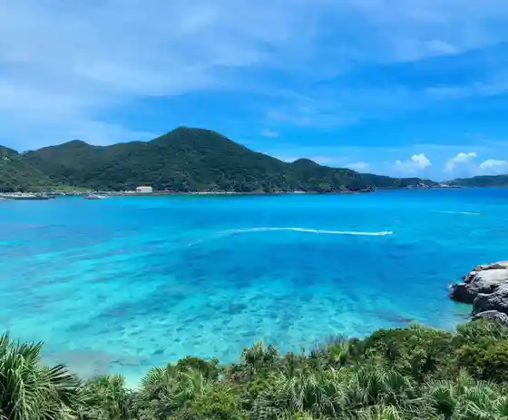
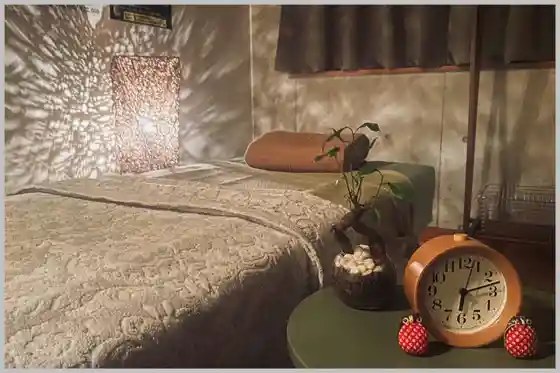
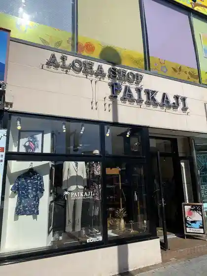

2026 Chatakuruza De Iku ! Kerama Sho Shima (Tokashiki Shima) Higaeri Tour
Naha, Okinawa · Official / source link

2SmiLe
Naha, Okinawa · 050-1721-2718 · Official / source link

ALOHA SHOP PAIKAJI Kokusaitsu Ri Mise
Naha, Okinawa · 098-863-5670 · Official / source link

Asian Relaxation Spa Ya-chaiChura
Naha, Okinawa · Official / source link
BLUE SKY Naha Airport Mise
Naha, Okinawa · 098-857-6872 · Official / source link
BLUE ZONE
Naha, Okinawa · 098-864-1414 · Official / source link
CANDLE atelier yaeee
Naha, Okinawa · Official / source link
CHURASPA
Naha, Okinawa · 098-868-2222 · Official / source link
CORALIA
Naha, Okinawa · 098-862-1135 · Official / source link
Cozy Beach Club
Naha, Okinawa · 090-8407-8911 · Official / source link
Craft Gift Yatchi to Mun
Naha, Okinawa · 098-988-9639 · Official / source link
DELICATESSEN TRUNQ Appuru Taun Mise
Naha, Okinawa · 098-960-2241 · Official / source link
DELICATESSEN TRUNQ Oroku Mise
Naha, Okinawa · 080-3901-9753 · Official / source link
DFS Naha Airport Menzeiten (Kokunaisen / Kokusaisen Taminaru)
Naha, Okinawa · Official / source link
DUNK (Danku) DIVING ENTERTAINMENT
Naha, Okinawa · 098-943-9810 · Official / source link
Dear Okinawa,
Naha, Okinawa · 098-857-7655 · Official / source link
Dora33design
Naha, Okinawa · Official / source link
Dragon Stone Healing
Naha, Okinawa · 080-2050-7917 · Official / source link
Drunker's
Naha, Okinawa · 098-943-6699 · Official / source link
GAJUMARU
Naha, Okinawa · Official / source link
GARB DOMINGO
Naha, Okinawa · 098-988-0244 · Official / source link
GOLD Scuba Diving
Naha, Okinawa · 070-8800-8808 · Official / source link
GORAIKOU TUITACI FLAGSHIP STORE
Naha, Okinawa · 098-894-8000 · Official / source link
GROUMETBAR
Naha, Okinawa · Official / source link
Grace Naha Mise
Naha, Okinawa · 098-861-5656 · Official / source link
HONNO PARK
Naha, Okinawa · 098-952-5576(098-952-5576) · Official / source link
IMAGE Naha Eapoto Mise
Naha, Okinawa · 098-840-1196 · Official / source link
JAL JTA De Iku !JJ Tour
Naha, Okinawa · Official / source link
JEENAR Matsuo Mise
Naha, Okinawa · 098-988-8554 · Official / source link
JEENAR Makishi Mise
Naha, Okinawa · 098-863-1556 · Official / source link
JJ Activity
Naha, Okinawa · 098-917-5575 · Official / source link
KALAKAUA INN THE KITCHEN HOSTEL AO
Naha, Okinawa · 098-863-8156 · Official / source link
Kafuu SPA Kokusaitsu Ri Main Shop
Naha, Okinawa · 098-943-5696 · Official / source link
La Cucina Soap Boutique
Naha, Okinawa · 098-988-8413 · Official / source link
Layout OKINAWA GOOD LIFE STORE
Naha, Okinawa · 098-975-9798 · Official / source link
MAJUN OKINAWA Naha Main Shop
Naha, Okinawa · 098-971-4277 · Official / source link
MIMURI
Naha, Okinawa · 050-1122-4516 · Official / source link
MOVIEGENIC OKINAWA
Naha, Okinawa · Official / source link
OKINAWA BLUE Market Hondori Mise
Naha, Okinawa · 080-6496-8269 · Official / source link
OKINAWA BLUE Heiwadori Mise
Naha, Okinawa · 098-943-2828 · Official / source link
OKINAWA VINTAGE
Naha, Okinawa · Official / source link
OKINAWA Niha ” Eien ” Toiu Sutorii Wo Motsu Ringu Garu
Naha, Okinawa · 098-861-5554 · Official / source link
Okinawa Alohashirt Factory Kokusaitsu Ri Mise
Naha, Okinawa · 090-4471-6076 · Official / source link
Pink Doll House - Matsueku Aiburo Neirusaron
Naha, Okinawa · 098-943-1028 · Official / source link
RAiNBOW SOUL OKiNAWA Naha Kokusaitsu Ri Mise
Naha, Okinawa · 080-9853-4343 · Official / source link
Ryu Spa Kokusaitsu Ri Kenchomae Mise
Naha, Okinawa · 098-862-9228 · Official / source link
SHAKEHAND Daiku no Te
Naha, Okinawa · 098-943-6007(080-1731-6885) · Official / source link
STATION Kumoji Mise
Naha, Okinawa · 098-943-6681 · Official / source link
SeaWorld
Naha, Okinawa · 098-864-5755 · Official / source link
SuiSavon- Shuri Sekken - to Kura Gyarariishoppu Main Shop
Naha, Okinawa · 0800-000-3777 · Official / source link
T Gyararia Okinawa
Naha, Okinawa · 0120-782-460 · Official / source link
TOTAL BEAUTY STELLA
Naha, Okinawa · 098-866-2332 · Official / source link
WINE SHOP Tsuchitoibuki
Naha, Okinawa · 080-3906-9753 · Official / source link
YOKANG
Naha, Okinawa · 098-834-9457 · Official / source link
[ Naha Airport Chikaku ] Bi Ra Warai 34CAFE (Sanshin Experience / Kankara Sanshin Kumitate / Eisa Experience / Ryu So Experience)
Naha, Okinawa · 070-9484-0973 · Official / source link
ainowa Miyako Shima Ro Ga Shonfotoedingu
Naha, Okinawa · Official / source link
ainowa Okinawa Ro Ga Shonfotoedingu
Naha, Okinawa · Official / source link
ainowa Ishigaki Shima Ro Ga Shonfotoedingu
Naha, Okinawa · Official / source link
ant for diving life.
Naha, Okinawa · 098-987-5734 · Official / source link
iPhone Shuri no Sumairufakutorii Naha Shintoshin Mise
Naha, Okinawa · 098-894-7010 · Official / source link
iPhone|iPad|Android Shuri Hambai Igamoba Naha Mise
Naha, Okinawa · 050-3646-9111 · Official / source link
oHacorte Naha Airport Mise
Naha, Okinawa · 098-840-1276 · Official / source link
peepaholic art gallery
Naha, Okinawa · Official / source link
petaluna Naha Shintoshin Mise
Naha, Okinawa · 098-861-5177 · Official / source link
taion
Naha, Okinawa · 098-917-4331 · Official / source link
tituti OKINAWAN CRAFT
Naha, Okinawa · 098-862-8184 · Official / source link
toncati
Naha, Okinawa · 098-868-9288 · Official / source link
touch fitness
Naha, Okinawa · 098-988-1742 · Official / source link
yaeee Niyoru Art School (O Ekaki Kyoshitsu)
Naha, Okinawa · 090-1943-3750 · Official / source link
yaeee Naha Shintoshin Kyoshitsu (Habariumu Kyandoruatorie)
Naha, Okinawa · 090-1943-3750 · Official / source link
Dainichiyama Morimitsu Tera
Naha, Okinawa · 098-884-3869 · Official / source link
(Riubo Ryoko Saron) (Kabu) Riubo Ryoko Sabisu
Naha, Okinawa · 098-869-4775 · Official / source link
Fuyu Dake no Kando Taiken !
Naha, Okinawa · 098-862-3496(08078291712) · Official / source link
Bi Ra Shima Shujitsu Kanko Basu Tour (C Kosu)
Naha, Okinawa · 098-941-6828 · Official / source link
Hannichi Hoeruotchingu Tour
Naha, Okinawa · 098-941-6828 · Official / source link
Okinawa Toropiko
Naha, Okinawa · 098-867-5032 · Official / source link
Okinawa Ya Market
Naha, Okinawa · 098-943-3398 · Official / source link
Okinawa Ya Main Shop
Naha, Okinawa · 098-860-7848 · Official / source link
O Kaori Senmonten Takimo no Ya Kaoru Kaze
Naha, Okinawa · 098-863-7395 · Official / source link
Kariyushi Shinkyuchiryo In Shuri
Naha, Okinawa · Official / source link
Kurumaya KeyTail (Bus☆Star)
Naha, Okinawa · 098-987-1177(080-8552-6300) · Official / source link
Tabirai Okinawa Tour Yoyaku
Naha, Okinawa · Official / source link
Tabirai Okinawa
Naha, Okinawa · Official / source link
Tabirai Okinawa Akuteibitei Yoyaku
Naha, Okinawa · Official / source link
Churapota (Okinawa Wa Gyo)
Naha, Okinawa · 098-888-0064 · Official / source link
Chindami Kogei
Naha, Okinawa · 098-869-2055 · Official / source link
Tembusu Naha
Naha, Okinawa · 098-868-7810 · Official / source link
Fukura Sha
Naha, Okinawa · 098-860-9555 · Official / source link
Yuntakuashibi Onsen Rikkarikka Yu
Naha, Okinawa · 098-867-1126 · Official / source link
Yonna Fudo Kayo Kazumi Ryorikyoshitsu 303
Naha, Okinawa · 098-832-7747 · Official / source link
Wakuwaku Mei Ire Workshop (Okinawa Kingu)
Naha, Okinawa · 098-979-8155 · Official / source link
Washita Shoppu Kokusaitsu Ri Mise
Naha, Okinawa · 098-864-0555 · Official / source link
Washita Shoppu Naha Airport Mise
Naha, Okinawa · 098-840-1197 · Official / source link
Atoriekutchane
Naha, Okinawa · 098-988-3105 · Official / source link
Atorie Kun
Naha, Okinawa · 098-863-2407 · Official / source link
Aramoajuerii Shurei Hoseki
Naha, Okinawa · 098-943-2117 · Official / source link
Uorufuburoi
Naha, Okinawa · 098-975-5669 · Official / source link
Emuwairentaka
Naha, Okinawa · 098-959-2472 · Official / source link
Okineshia no Mise Shima Suzumi
Naha, Okinawa · 0120-865-646(098-884-2444) · Official / source link
Orientaruhobii
Naha, Okinawa · 098-988-3005 · Official / source link
Orijinarugurasuwan Naha Mise
Naha, Okinawa · 098-867-5650 · Official / source link
Oganikku City Ba Tembusu Naha Mise
Naha, Okinawa · 098-955-3599 · Official / source link
Odasutsu no Ferozu
Naha, Okinawa · 098-852-1780 · Official / source link
Kakazu Toki Mise
Naha, Okinawa · Official / source link
Gaido to Aruku Naha Machima I (Sakae Town City Ba Kaiwai Burari Sanpo)
Naha, Okinawa · 098-860-5780 · Official / source link
Kirakunisauna
Naha, Okinawa · 098-988-0839(0989880839) · Official / source link
Kosumikku Nangoku Mise
Naha, Okinawa · 098-862-4040 · Official / source link
Kosumikku Matsuo Mise
Naha, Okinawa · 098-863-4022 · Official / source link
Kosumikku Nami Saru Mise
Naha, Okinawa · 098-863-4150 · Official / source link
Kotoran Supa
Naha, Okinawa · Official / source link
Kowakingusupesu (HAVE A GOOD DAY)
Naha, Okinawa · 090-8292-1856 · Official / source link
Saradaboru
Naha, Okinawa · 098-869-0204 · Official / source link
Shiimakkusudaibingu Club Okinawa
Naha, Okinawa · 098-861-1425 · Official / source link
Sutaato Naha
Naha, Okinawa · 080-9853-4866 · Official / source link
Sutekihausu 88Jr. Ion Naha Mise
Naha, Okinawa · 098-894-8845 · Official / source link
Sutekihausu 88Jr. Makkusubaryu An Sha Mise
Naha, Okinawa · 098-894-8629 · Official / source link
Sutekihausu 88Jr. Matsuyama Mise
Naha, Okinawa · 098-869-7888 · Official / source link
Sutekihausu 88 Naha Airport Mise
Naha, Okinawa · 098-996-4388 · Official / source link
Taira Kuko Baiten
Naha, Okinawa · 098-857-6881 · Official / source link
Taun Plaza Kanehide Nishi no Machi Market
Naha, Okinawa · 098-863-4500 · Official / source link
Chigattohausu Kippuppu
Naha, Okinawa · 098-858-1159 · Official / source link
Diizuparusu Okinawa
Naha, Okinawa · 098-951-3975 · Official / source link
Doraiheddomassaji Fu-wa
Naha, Okinawa · 098-988-0970 · Official / source link
Nagannu Beach
Naha, Okinawa · 098-860-5860 · Official / source link
Habariumu Kyandoru Taiken Kyoshitsu yaeee
Naha, Okinawa · Official / source link
Habupiiru Sofiakaron
Naha, Okinawa · 090-5384-9601 · Official / source link
Panashiia
Naha, Okinawa · 080-3963-4832 · Official / source link
Paradaisu Kurabu
Naha, Okinawa · 098-869-7797 · Official / source link
Pasonarutoreningujimu Ichi
Naha, Okinawa · 090-4130-2090 · Official / source link
Hiji Kawa Hashi Oyobi Toritsuke Doro (Ken Shitei Yukei Bunkazai)
Naha, Okinawa · Official / source link
Furawashopputobaru
Naha, Okinawa · 098-941-4977(098-863-1880) · Official / source link
Burusutairu Okinawa
Naha, Okinawa · 098-866-5788 · Official / source link
Puzochiizu Ga Kisera Appuru Taun Mise
Naha, Okinawa · 098-911-1430 · Official / source link
Herikoputa Yuranhiko
Naha, Okinawa · Official / source link
Heritakushii
Naha, Okinawa · Official / source link
Betteruhaimu Kinenhi
Naha, Okinawa · Official / source link
Perii Teitoku Joriku Kinenhi
Naha, Okinawa · Official / source link
Hoeruotchingu (12 Gekka Jun 4 Gatsu Jojun)
Naha, Okinawa · 098-891-9090 · Official / source link
Honuhonudaibazu
Naha, Okinawa · 098-988-8877 · Official / source link
Marinhausushiisa Naha Mise
Naha, Okinawa · 0120-10-2743(098-869-6329) · Official / source link
Mamiya Kamaboko
Naha, Okinawa · 098-988-3195(0989883195) · Official / source link
Yuesu Ekisupuresu
Naha, Okinawa · 098-861-1846 · Official / source link
Rado Kanko Okinawa Eigyosho
Naha, Okinawa · 098-951-0012 · Official / source link
Rikamaunten Naha Matsuyama Mise
Naha, Okinawa · 098-860-5321 · Official / source link
Rifiidaibingu Club
Naha, Okinawa · 098-833-5705 · Official / source link
Rirakuzeshonsaron
Naha, Okinawa · 098-868-7739(0988687739) · Official / source link
Riifazu De Ikugarama Sho Shima 1 Nittai Ken Daibingu Tour
Naha, Okinawa · 098-862-3496 · Official / source link
Rentaruofisu BrilliantPort
Naha, Okinawa · Official / source link
Rentaru Ryu So veni
Naha, Okinawa · 098-917-0651(0989170651) · Official / source link
Roiyaruhandosupa
Naha, Okinawa · 070-1942-7082 · Official / source link
Ippan Shadanhojin Naha Tourism Association
Naha, Okinawa · 098-868-4887 · Official / source link
Ippan Shadanhojin Kukuru (Kukuru)
Naha, Okinawa · 098-888-5996 · Official / source link
Nanatsu Haka (Nanachibaka)
Naha, Okinawa · Official / source link
Mie Shiro Onsen Ama Baths (Rowajiiru Supatawa Naha 2 Kai)
Naha, Okinawa · Official / source link
Yogi Park
Naha, Okinawa · Official / source link
Chugokushiki Garden Fukushu Sono
Naha, Okinawa · 098-869-5384 · Official / source link
Kyukei Mon
Naha, Okinawa · Official / source link
Kyu Gei Mise
Naha, Okinawa · 098-861-6690 · Official / source link
Ie Goten Haka (Kuni Shitei Juyo Bunkazai)
Naha, Okinawa · Official / source link
Koeki Zaidanhojin Tsushima Maru Kinenkai Tsushima Maru Memorial Museum
Naha, Okinawa · 098-941-3515 · Official / source link
Uchikin Shiro Ontake (Shi Shitei Historic Site)
Naha, Okinawa · Official / source link
Maejima Ato Center
Naha, Okinawa · 098-863-0244 · Official / source link
Uranai Hiiringusaron Amana
Naha, Okinawa · 098-988-4619 · Official / source link
Furugire to Wa Kotto to Takara Do
Naha, Okinawa · Official / source link
Kokusaitsu Ri
Naha, Okinawa · 098-863-2755 · Official / source link
Kokusaitsu Ri Nimotsu Azuka Ri Tokoro
Naha, Okinawa · 098-869-4649 · Official / source link
Sono Hi Ya Takeshi Ontake Sekimon
Naha, Okinawa · 098-917-3501 · Official / source link
Shiroma Bingata Workshop
Naha, Okinawa · 098-885-9761 · Official / source link
Tsuboya Mingei
Naha, Okinawa · Official / source link
Tsuboya Ufu Shiisa
Naha, Okinawa · Official / source link
Tsuboya no Ko Yaki no Bori Kama Fu Ishi Sho (Ken Shitei Yukei Bunkazai)
Naha, Okinawa · Official / source link
Tsuboya Yachimun Tori
Naha, Okinawa · Official / source link
Tsuboya Yaki to Ko Bijutsu to Takara Do
Naha, Okinawa · 090-4353-5933 · Official / source link
Tsuboya Toki Hall
Naha, Okinawa · 098-866-3284 · Official / source link
Ogata Suichu Kankosen Oruka Go
Naha, Okinawa · 098-866-0489 · Official / source link
Tennyo Hashi (Kuni Shitei Juyo Bunkazai)
Naha, Okinawa · Official / source link
Taiheizan Ankokuji
Naha, Okinawa · 098-884-2735 · Official / source link
Okuhara Garasu Seizosho
Naha, Okinawa · 098-868-7866 · Official / source link
O Yama Sogo Sports Park
Naha, Okinawa · Official / source link
Shurei Mon
Naha, Okinawa · 098-886-2020 · Official / source link
Miyako Shima Akuteibitei Yoyaku - Oki Raku Okiraku
Naha, Okinawa · 03-3570-6165 · Official / source link
Miyako Shima Shu no Ga Ringu Yoyaku - Oki Raku Okiraku
Naha, Okinawa · Official / source link
Miyako Shima Daibingu Yoyaku - Oki Raku Okiraku
Naha, Okinawa · Official / source link
Shimabukuro Toki Tokoro
Naha, Okinawa · 098-868-2507 · Official / source link
Bengagaku (Kuni Shitei Historic Site)
Naha, Okinawa · Official / source link
O Kashi Goten Kokusaitsu Ri Matsuo Mise
Naha, Okinawa · 098-862-0334 · Official / source link
Kerama Sho Shima Hannichi Botoshu no Ga Ringu Tour
Naha, Okinawa · 098-941-6828 · Official / source link
Kerama (Kerama) Daibingu Shu no Ga Ru Yoyaku - Oki Raku Okiraku
Naha, Okinawa · Official / source link
Akogare no Kuruza & Botopuraibetochata !
Naha, Okinawa · 098-941-6828 · Official / source link
Niigaki Chinsuko Honpo Makishi Mise
Naha, Okinawa · 098-867-2949 · Official / source link
Niigaki Ie House (Kuni Shitei Juyo Bunkazai)
Naha, Okinawa · Official / source link
Niigaki to En
Naha, Okinawa · 098-864-1713 · Official / source link
Kyuen Kaku Tera Hojo Hashi (Kuni Shitei Juyo Bunkazai)
Naha, Okinawa · Official / source link
Kyuen Kaku Tera Somon
Naha, Okinawa · Official / source link
Kyu Sogen Tera Daiichi Mon Oyobi Ishi Sho (Kuni Shitei Juyo Bunkazai)
Naha, Okinawa · Official / source link
Yugengaisha Uesutomarin
Naha, Okinawa · 098-866-0489(9:00~20:00) · Official / source link
Suekichi Miya to Michi (Ken Shitei Yukei Bunkazai)
Naha, Okinawa · Official / source link
Honsha (Kabu) Riubo Ryoko Sabisu
Naha, Okinawa · Official / source link
Honsha Kikaku Tour Center (Kabu) Riubo Ryoko Sabisu
Naha, Okinawa · Official / source link
Higashi no Ido (Higashi Nuka)
Naha, Okinawa · Official / source link
Higashi Takushii Omakase Kanko Puran
Naha, Okinawa · Official / source link
Matsuyama Park
Naha, Okinawa · Official / source link
Sakae Town Riubo
Naha, Okinawa · 098-835-5165 · Official / source link
Nihonryoko Okinawa
Naha, Okinawa · 098-862-7580 · Official / source link
Kinkinihon Tsurisuto Okinawa
Naha, Okinawa · Official / source link
Gokujo Suimin Doraiheddosupa Sen Mame no Chikara Naha Izumisaki Mise
Naha, Okinawa · 098-988-4740 · Official / source link
Rakuen CAFÉ Rakuen Hyakkaten
Naha, Okinawa · Official / source link
Kankai Mon
Naha, Okinawa · Official / source link
Mingei Nakasone
Naha, Okinawa · Official / source link
Suichu Gomi Hiroi Senmonten Dr.blue
Naha, Okinawa · Official / source link
O Hikawa
Naha, Okinawa · Official / source link
Oki Raku Okinawa Womotto Tanoshiku !
Naha, Okinawa · Official / source link
Okinawa Chanpuru LIVE SHOW
Naha, Okinawa · 098-987-6817 · Official / source link
Okinawa Detsukuru Kekkonyubiwa Konyakuyubiwa
Naha, Okinawa · Official / source link
Okinawa no Keshiki Wo Mankitsu ♪ Opuntoppubasu (Bi Ra Shima SKY View) Go
Naha, Okinawa · 098-941-6828 · Official / source link
Okinawa Arohashatsu (Kariyushi Uea) no Mangohausu (Kokusaitsu Ri 1 Go Mise)
Naha, Okinawa · 098-862-4881 · Official / source link
Okinawa Arohashatsu (Kariyushi Uea) no Mangohausu (Kokusaitsu Ri 3 Go Mise)
Naha, Okinawa · 098-863-9266 · Official / source link
Okinawa Arohashatsu (Kariyushi Uea) no Mangohausu (Kokusaitsu Ri 5 Go Mise)
Naha, Okinawa · 098-917-1947 · Official / source link
Okinawa Arohashatsu (Kariyushi Uea) no Mangohausu (Oroku Baipasu Mise)
Naha, Okinawa · 098-858-0598 · Official / source link
Okinawa Ato Experience Bi Ra Kaze (Churakaji)
Naha, Okinawa · 098-866-8558 · Official / source link
Okinawa Opushonaru Tour Senmonten (Seruriamburu)
Naha, Okinawa · 098-941-6828 · Official / source link
Okinawa Daibingusukuru Paruebu
Naha, Okinawa · Official / source link
Okinawa Bariafurii Tour Center
Naha, Okinawa · 098-858-7760 · Official / source link
Okinawa Paraseringupuran Yoyaku - Oki Raku Okiraku
Naha, Okinawa · 03-3570-6165 · Official / source link
Okinawa Marin Club An
Naha, Okinawa · 090-3999-4385 · Official / source link
Okinawa Uranai (Teso Ninso Kanso) Ryukyu Kanso Shi Ai Yoshino
Naha, Okinawa · 090-6858-7483 · Official / source link
Okinawa Ryoko Senmon Riubo Ryoko Sabisu Honsha WEB Hambai Sekushon
Naha, Okinawa · Official / source link
Okinawaken Sanshin Seisaku Jigyo Kyodokumiai (Sanshin Kumiai)
Naha, Okinawa · 098-884-8288 · Official / source link
Okinawa Prefectural Museum Art Museum (Okimyu)
Naha, Okinawa · 098-941-8200 · Official / source link
Okinawa Prefectural Budokan
Naha, Okinawa · 098-858-2700 · Official / source link
Okinawa Shizentai Ken Gakushu Puroguramu (Shugakuryoko) (Kabu) Shiisa
Naha, Okinawa · 098-866-4519 · Official / source link
Okinawa Jiyujikan
Naha, Okinawa · 098-943-2853 · Official / source link
Okinawa T Shatsu & Zakka Ryukyu Pirasu Fu Shima Tori Mise
Naha, Okinawa · 098-863-6050 · Official / source link
Haku Iyumachi
Naha, Okinawa · 098-868-1096 · Official / source link
Haku Daia Haha Kashin
Naha, Okinawa · Official / source link
Awamori Ya Kokusai Mise
Naha, Okinawa · 098-868-5252 · Official / source link
Awamori Ya Airport Minami Mise
Naha, Okinawa · 098-851-7738 · Official / source link
Awamori Mizuho Shuzo Tenryu Kura (Kura Kengaku)
Naha, Okinawa · 098-885-0121 · Official / source link
Nami no Ue Umisora Park Nami no Ue Beach
Naha, Okinawa · 098-863-7300 · Official / source link
Nami no Ue Wakuwaku Kizzu Land
Naha, Okinawa · 098-917-2273 · Official / source link
Hajo Miya
Naha, Okinawa · 098-868-3697 · Official / source link
Fu Shima Tori
Naha, Okinawa · Official / source link
Ama Workshop Teida Mise
Naha, Okinawa · 098-863-0015 · Official / source link
Ama Workshop Makishi Mise
Naha, Okinawa · 098-863-0321 · Official / source link
Umi So Heiwadori 2 Go Mise
Naha, Okinawa · 098-862-9750 · Official / source link
Umi So Heiwa Tori Mise
Naha, Okinawa · 098-862-9228 · Official / source link
Umikaze Daibazu
Naha, Okinawa · 098-857-1761 · Official / source link
Tokutei Hieiri Katsudo Hojin Nippon Bariafuriidaibingu Kyokai
Naha, Okinawa · 098-869-4957 · Official / source link
Tamaudon
Naha, Okinawa · Official / source link
Ryukyu Garasu Taiken Kobo Yoyaku - Oki Raku Okiraku
Naha, Okinawa · Official / source link
Ryukyu Dento Meika Jahana Kippan Mise
Naha, Okinawa · 098-867-3687 · Official / source link
Ryukyu Hanpu Fakutorii & Shoppu
Naha, Okinawa · 098-996-2404 · Official / source link
Ryukyu Mingei Center Kumoji Mise
Naha, Okinawa · 098-863-6881 · Official / source link
Ryukyu Meika Kuganiya
Naha, Okinawa · 098-868-0234 · Official / source link
Ryu So Rentaru no Yuazu
Naha, Okinawa · 098-862-8850(0988628850) · Official / source link
Ryu So Waso Rentarusutajio Chura Bijin
Naha, Okinawa · 070-5482-9244 · Official / source link
Ryu So Experience Ryu Sochaku Tsuke Kosupure no (Ryu So San Fukuyama)
Naha, Okinawa · Official / source link
Zuisen Shuzo
Naha, Okinawa · 098-884-1968 · Official / source link
Maminami Kaze Marukatsu
Naha, Okinawa · Official / source link
Shinju Michi Ato
Naha, Okinawa · Official / source link
Ishigaki Shima Akuteibitei Yoyaku - Oki Raku Okiraku
Naha, Okinawa · 03-3570-6165 · Official / source link
Ishigaki Shima Shu no Ga Ringu Yoyaku - Oki Raku Okiraku
Naha, Okinawa · Official / source link
Ishigaki Shima Daibingu Yoyaku - Oki Raku Okiraku
Naha, Okinawa · Official / source link
Ishigaki Shima Maboroshi no Shima (Hama Shima) Tour Yoyaku - Oki Raku Okiraku
Naha, Okinawa · Official / source link
Ishigaki Shima Ao no Cave Tour Yoyaku - Oki Raku Okiraku
Naha, Okinawa · Official / source link
Daiichi Makishi Kosetsu Market
Naha, Okinawa · 098-867-6560 · Official / source link
Kekkonyubiwa Konyakuyubiwa no (Ari) Amahisa Kako Tokoro
Naha, Okinawa · Official / source link
Iku to Sono
Naha, Okinawa · Official / source link
Omotesando Sukinkurinikku Okinawa In
Naha, Okinawa · 0120-383-790 · Official / source link
Kaku Man Shikki
Naha, Okinawa · 098-943-3810 · Official / source link
Shikina Sono
Naha, Okinawa · Official / source link
Gokokuji
Naha, Okinawa · Official / source link
Daruma Mine Seiraiin
Naha, Okinawa · 098-884-1077 · Official / source link
Naha
Naha, Okinawa · Official / source link
Naha Tami Gyararii
Naha, Okinawa · 098-867-7663 · Official / source link
Naha Makishi Ekimae Hoshizora Kominkan Puranetariumu
Naha, Okinawa · 098-917-3443 · Official / source link
Naha Ritsu Tsuboya Yakimono Museum
Naha, Okinawa · 098-862-3761 · Official / source link
Kinjo Ohi Kawa (Shi Shitei Historic Site)
Naha, Okinawa · Official / source link
Choshichi Ya Kokusaitsu Ri Kumoji Mise
Naha, Okinawa · Official / source link
Choshichi Ya Kokusaitsu Ri Makishi Mise
Naha, Okinawa · Official / source link
Shuri Shiro Park
Naha, Okinawa · 098-886-2020 · Official / source link
Shuri Senshoku Kan suikara
Naha, Okinawa · 098-917-6030 · Official / source link
Shuri Ryusen
Naha, Okinawa · 098-886-1131 · Official / source link
Shuri Kannon Do Jigan In
Naha, Okinawa · 098-884-0565 · Official / source link
Shuri Kinjo no Dai Akagi
Naha, Okinawa · Official / source link
Shuri Kinjo Town no Ishidatami Michi (Ken Shitei Historic Site)
Naha, Okinawa · Official / source link
Ryu Hashira
Naha, Okinawa · Official / source link
Ryuen Hashi (Ken Shitei Yukei Bunkazai)
Naha, Okinawa · Official / source link
Ryu Tan (Ken Shitei Historic Site)
Naha, Okinawa · 098-886-2020 · Official / source link
YOSEMIYA Marin Kurabu
Naha, Okinawa · Official / source link